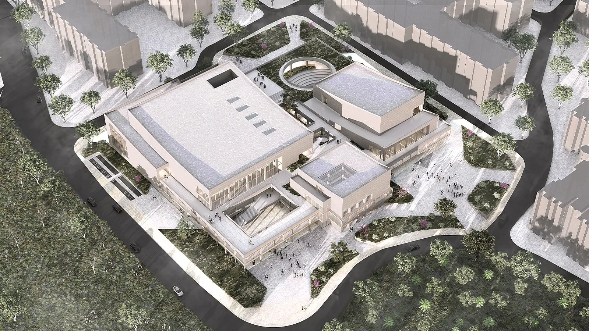
03校园剧场设计
山间·聚场
Mountain Gathering
学生友好型校园剧场 / 学生活动中心设计
- 地点
- 重庆大学虎溪校区
- 面积
- 84,784 ㎡
- 年份
- 2026.04
- 团队
- 杨官运、王一凡、宋芸珂
- 来源
- 大四下课程作业
- 指导
- 许景峰
- 参与
- 前期分析、方案构思、3D 建模、部分工程图、渲染、后期处理
剧场不必是校园里最「正式」的那栋楼——它可以是一层被架空的公共界面。
设计命题
校园剧场与学生活动中心通常是校园里「最正式」的建筑：大门紧闭，与日常校园生活隔着一层。但虎溪校区的学生需要的不只是一座观演建筑，更是一个日常可以进入、停留、穿行的公共场所。怎么让剧场从「仪式性容器」变成「校园客厅」，是设计的核心命题。
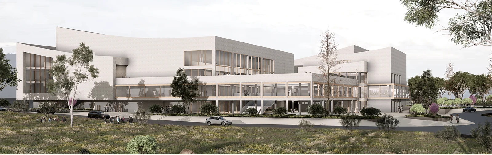
核心策略：灰空间串联的「聚场」
以灰空间为核心组织要素，连接大剧场、小剧场与学生活动中心三个功能体块。这些灰空间既是行走的路径，也是停留共享的场所——穿行与驻留的边界被有意做得模糊。三个体块不再彼此孤立，而是被一层架空的公共界面串成一个「聚场」：正式演出与非正式活动在此交织。
形态逻辑：山的轮廓 → 屋面起伏 → 层叠屋顶 → 灰空间 → 底层架空
形态模仿山的自然轮廓，屋面随功能体块高低起伏，形成层叠变化的屋顶。功能决定体块大小，界面策略统一；底层的灰空间让建筑像从校园地面上长出来，而不是强加在场地之上。
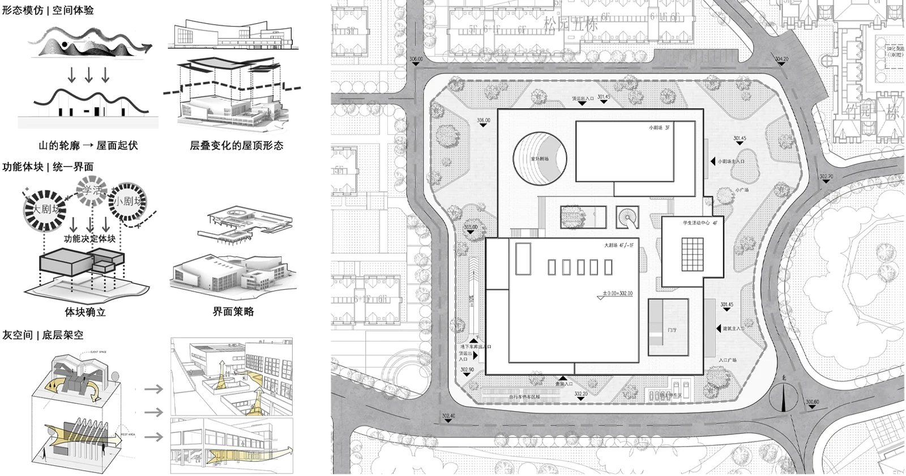
人群需求与场地
四类人群各有诉求：快速通行的人群要通达便捷，日常活动的人群要导向识别与停留空间，观演集散的人群要足够的承载面积，事务服务的人群要交流开放又兼顾安静独立。设计不打算用四套分区去满足四种需求，而是让灰空间同时回应它们。
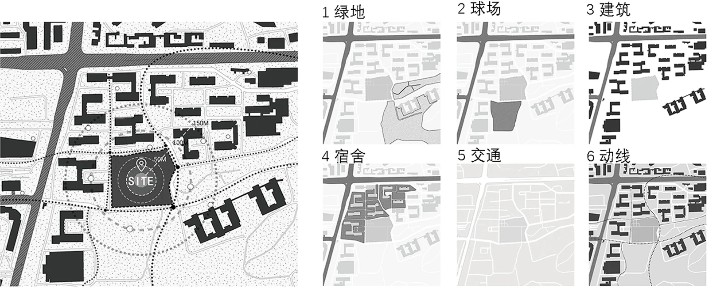
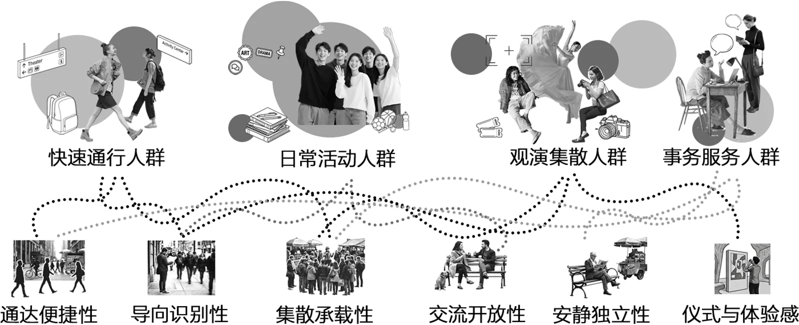
形体生成与流线组织
流线分三类：公众（集散观演）、学生（日常活动）、观演（演出入场），三线在灰空间中交汇，又互不干扰。大剧场与小剧场均采用网架结构屋顶，实现大跨度无柱空间——结构不再需要落在观众厅中间。
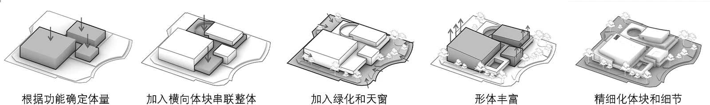
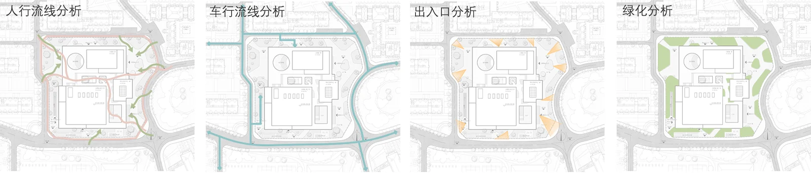
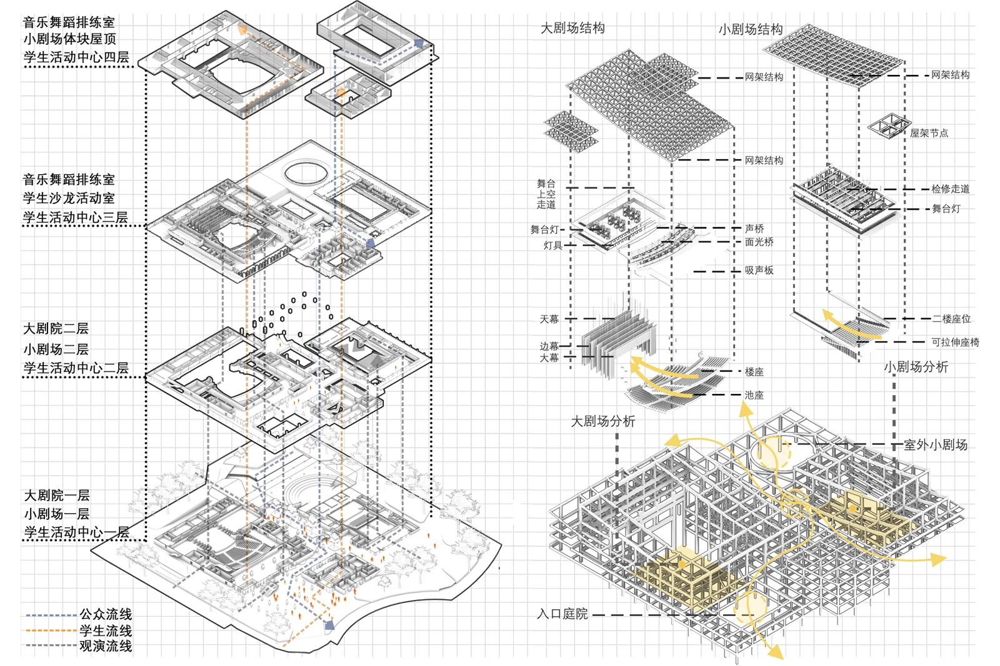
剧场技术与空间剖面
大剧场配置声桥、面光桥、吸声板、天幕边幕等专业设施，视线与声线都经过专门优化；小剧场靠座椅排布与声环境调整，适配话剧、歌舞剧、观影等多种演出。长卷剖透视完整展示从大剧场、小剧场到活动中心的空间连续关系。
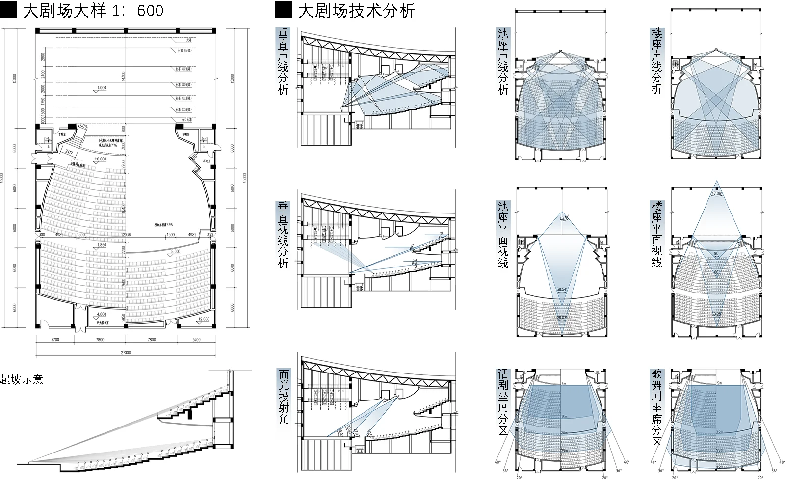
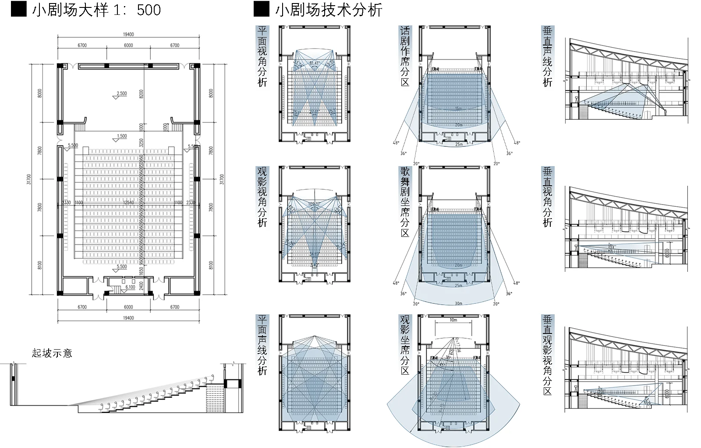
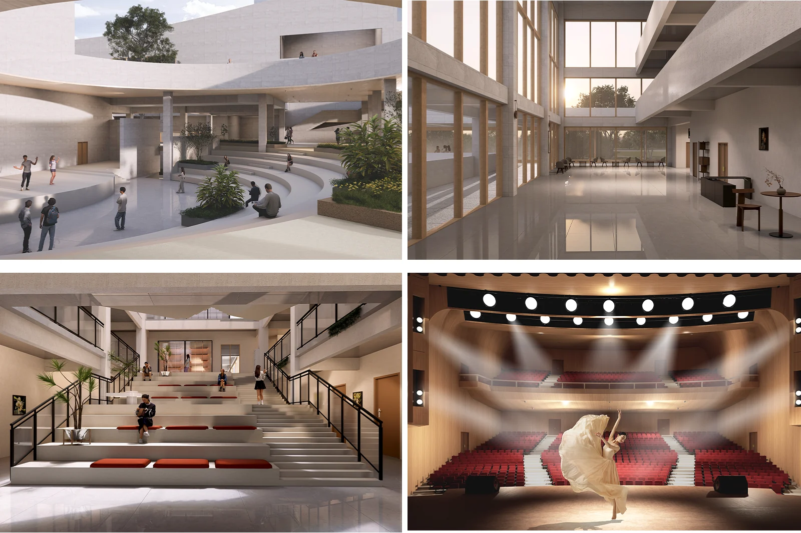
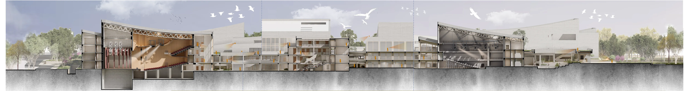